Program
This year’s event will include dozens of great wines in fun and educational conducted tastings. Each wine is presented by the owner and/or winemaker. All are included in your registration fee.
$2,495 per person.(Complete Weekend Program)
Order tickets
Your complete registration package includes:
- Friday and Saturday daytime sit-down tastings—top wines from the world’s best producers
- Thursday and Friday evening Critics’ Choice Grand Tastings—more than 250 wines rated 90 points or better
- Friday and Saturday seated lunches paired with wines
- Saturday evening black-tie Grand Award Banquet—a lavish dinner with special wines and star entertainment
Numbers in parentheses are offical Wine Spectator ratings.
Wine Spectator’s 2015 Top 10 Wines:
Selected by Wine Spectator’s board of editors and published in the Dec. 31 Top 100 issue. An annual highlight.
| 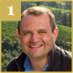 | Peter Michael Cabernet Sauvignon Oakville Au Paradis 2012 (96) presented by Nicolas Morlet |
| Quilceda Creek Cabernet Sauvignon Columbia Valley 2012 (96) presented by John Ware |
| 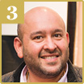 | Evening Land Pinot Noir Eola-Amity Hills Seven Springs Vineyard La Source 2012 (98) presented by Rajat Parr |
| Il Poggione Brunello di Montalcino 2010 (95) presented by Alessandro Bindocci |
| 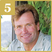 | Mount Eden Vineyards Chardonnay Santa Cruz Mountains 2012 (95) presented by Jeffrey Patterson |
| 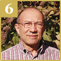 | Bodegas Aalto Ribera del Duero 2012 (94) presented by Javier Zaccagnini |
| 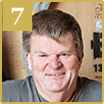 | Escarpment Pinot Noir Martinborough Kupe Single Vineyard 2013 (95) presented by Larry McKenna |
| Masi Amarone della Valpolicella Classico Serègo Alighieri Vaio Amaron 2008 (95) presented by Raffaele Boscaini |
| 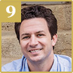 | Clos Fourtet St.-Emilion 2012 (94) presented by Matthieu Cuvelier |
| Klein Constantia Vin de Constance Constantia 2009 (95) presented by Hans Astrom |
Italy’s Brunello di Montalcino:
A tasting of the 2010 vintage, rated 98 points by Wine Spectator, from four of Italy’s top producers to highlight different styles and sub-regions. Each wine is presented by the owner.
| 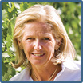 | Altesino Brunello di Montalcino Riserva 2010 (96) presented by Elisabetta Gnudi Angelini |
| Donatella Cinelli Colombini Brunello di Montalcino Riserva 2010 (97) presented by Donatella Colombini |
| Mastrojanni Brunello di Montalcino Vigna Schiena d’Asino 2010 (95) presented by Riccardo Illy |
| San Felice Brunello di Montalcino Campogiovanni 2010 (95) presented by Leonardo Bellaccini |
Champagne:
Explore the diversity of Champagne with a tasting from four of the region’s top producers pouring their têtes de cuvées.
| Bollinger Extra Brut Champagne R.D. 2002 (96) presented by Guy de Rivoire |
| Dom Pérignon Brut Rosé Champagne 2004 (96) presented by Vincent Chaperon |
| Piper Heidsieck Brut Champagne Rare 2002 (97) presented by Régis Camus |
| Salon Brut Blanc de Blancs Champagne Le Mesnil 2004 (94) presented by Didier Depond |
France’s Château Lafite Rothschild:
| 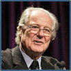 | A vertical tasting of six vintages celebrating four decades from one of Bordeaux’s most famous first-growth châteaus, led by Baron Eric de Rothschild. |
The Most Exciting White Wines of the 21st Century: So Far.
| Matt Kramer presents the three white wines he considers his most thrilling—and far-flung—21st century taste discoveries from Canada, South Africa and Portugal. |
Global Pinot Noir:
Four regions excel with this difficult but alluring grape: Burgundy, California, Oregon and New Zealand. We present a top version from each.
| Arista Pinot Noir Russian River Valley Harper’s Rest 2013 (94) presented by Matt Courtney |
| Bethel Heights Pinot Noir Eola-Amity Hills Æolian 2014 (95) presented by Ben Casteel |
| Faiveley Corton Clos des Cortons Faiveley 2013 (93) presented by Erwan Faiveley |
| 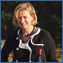 | Two Paddocks Pinot Noir Central Otago The Last Chance Earnscleugh Vineyard Proprietor’s Reserve 2013 (94) presented by Jacqui Murphy |
Dessert Wines:
Taste four dessert/late-harvest wines, unique, rare and historic, from France, Hungary, Portugal and South Africa. Owners will be on stage to talk about these sensational “sweeties.”
| Château d’Yquem Sauternes 2005 (97) presented by Pierre Lurton |
| Klein Constantia Vin de Constance Constantia 2004 (94) presented by Bruno Prats |
| Quinta do Noval Vintage Port Nacional 2001 presented by Christian Seely |
| Royal Tokaji Tokaji Aszú 6 Puttonyos Betsek 2008 (95) presented by Charlie Mount |
California’s Cabernet Sauvignon:
A tasting of top Cabernet Sauvignons from Pritchard Hill, one of Napa Valley’s prime sub-regions, each presented by its producer.
| 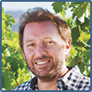 | Brand Napa Valley Cabernet Sauvignon Napa Valley 2013 presented by Philippe Melka |
| 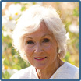 | Chappellet Cabernet Sauvignon Napa Valley Pritchard Hill 2013 presented by Molly Chappellet |
| Colgin IX Estate Napa Valley 2013 presented by Allison Tauziet |
| Continuum Napa Valley 2013 presented by Tim Mondavi |
| Ovid Napa Valley 2013 presented by Janet Pagano |
Wine Stars:
Throughout the weekend there will be individual presentations of great wines by renowned vintners from around the globe, each a star in the world of wine.
| 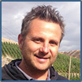 | Christophe Baron Cayuse Syrah Walla Walla Valley Bionic Frog 2007 (95), Washington |
| Boots Brounstein Diamond Creek Cabernet Sauvignon Napa Valley Volcanic Hill 2012 (90), California |
| Philippe Guigal E. Guigal Côte-Rôtie La Turque 2011 (97), France |
Chefs Challenge:
Four dishes, eight wines. Featuring celebrity chefs José Andrés, Emeril Lagasse, Michael Lomonaco and restaurateur Piero Selvaggio. A fun event for all.
The Grand Award Banquet:
The crowning event of the weekend is a lavish black-tie evening with special wines, delectable food and star entertainment. The banquet is the natural conclusion to a weekend filled with new wine experiences and new friends.
Wine Spectator will recognize the restaurateurs who have in 2016 newly earned the Grand Award, which honors the world’s greatest restaurant wine lists. They include Blue Hill at Stone Barns, in Pocantico Hills, N.Y.; Epicure, in Paris; Geranium, in Copenhagen, Denmark; Jean-Georges, in New York City; Murray Circle Restaurant, in Sausalito, Calif.; The Modern in New York City; The Restaurant at Meadowood in St. Helena, Calif.
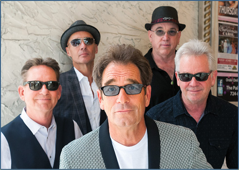
Entertainment:
Huey Lewis and the News returns. They are one of America’s great rock and roll bands. Be ready to dance and sing along to their top hits such as “Do You Believe in Love,” “Hip To Be Square” and “The Power of Love,” to name just a few. This is a big show with a big sound. It is an exciting end to a perfect weekend.
Important Notice: The New York Wine Experience is sponsored by the Wine Spectator Scholarship Foundation, which underwrites grants and scholarships to students pursuing careers in the wine industry. Attendance is tax-deductible to the extent permitted by law.
Cancellation Policy: COMPLETE PACKAGE -- A full refund is available until July 1, 2016. After that date, until September 15, there is a $500 per person cancellation fee. After September 15 there are no refunds. GRAND TASTING AND BANQUET TICKETS -- A full refund is available until October 1, 2016. After that date there are no refunds for any tickets. Registrations, Banquet tickets and Grand Tasting tickets may be transferred to another person at any time.
Event sponsor reserves the right to refuse admission to any applicant. Must be 21 or older to attend.